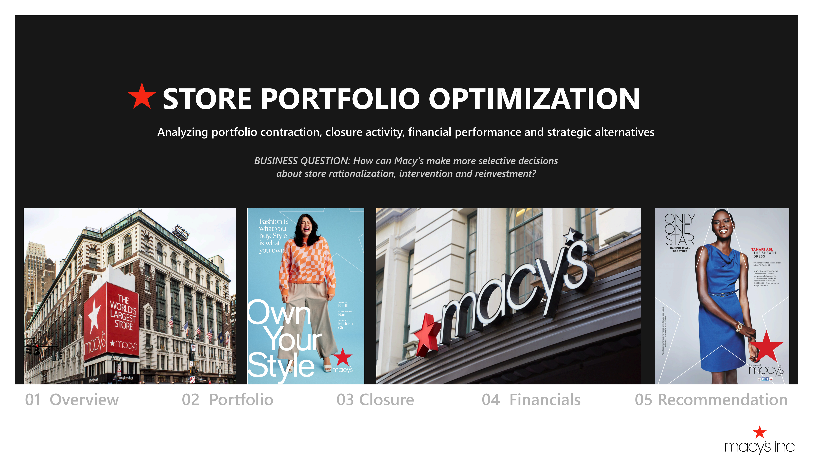

01
Portfolio Evolution
Tracks Macy's location footprint across 11 reporting periods and highlights the concentrated contraction in late 2024.
A public-data decision-support case study examining Macy's store portfolio evolution and the financial context behind portfolio decisions.

Macy's is reducing its store footprint while concentrating investment on selected go-forward locations. The challenge is determining when portfolio rationalization is appropriate and when intervention or reinvestment may be the better strategic response.
How can Macy's use portfolio and financial evidence to make more selective decisions about store rationalization, intervention, and reinvestment?
The analysis is designed for portfolio strategy and planning, where store rationalization decisions need to balance footprint reduction with opportunities for intervention and reinvestment.
Evaluate portfolio changes using store history, closure evidence, financial performance, and reported strategic outcomes.
Structure future location decisions around four possible actions: Invest, Transform, Monitor, or Exit.
Public store disclosures, closure records, SEC filings, and annual reports move through a structured workflow from collection and validation to portfolio analysis and decision support.
Quarterly Macy's store disclosures, announced closure records, SEC filings, and annual reports are collected as the core evidence base.
Reporting periods, location identifiers, store records, closure data, and financial fields are standardized and validated before analysis.
Store locations are tracked across reporting periods, portfolio movements are classified, and announced closures are reconciled against the historical portfolio.
Annual and quarterly financial results are combined with reported strategy, portfolio actions, and Reimagine outcomes to provide company-level context.
The combined evidence is brought into Power BI to support an Invest, Transform, Monitor, or Exit framework for future portfolio decisions.
The analysis moves from portfolio contraction and closure reconciliation to the financial and strategic evidence supporting a more selective approach to future portfolio decisions.
Tracks Macy's location footprint across 11 reporting periods and highlights the concentrated contraction in late 2024.
Reconciles announced closures against the historical portfolio, with 13 of 14 records matched to known locations.
Translates the portfolio and financial evidence into four possible actions: Invest, Transform, Monitor, or Exit.


The portfolio moved from 488 location IDs at the start of the analysis to 408 in the latest snapshot.
The largest change came between Q3 and Q4 2024, when 54 locations disappeared from the reported portfolio.
The closure reconciliation produced a 92.9% match rate, with one announced closure remaining unresolved.
Locations missing from a later store list were treated as portfolio movements, not confirmed closures unless they could be matched to Macy's announced closure records.
Macy's reported stronger FY2025 performance from its Reimagine 125 locations, suggesting that reducing the footprint is only part of the portfolio strategy.
The findings point to four practical options for future decisions: Invest, Transform, Monitor, or Exit, depending on the evidence available for each location.
Use the available evidence to separate locations that may benefit from investment or improvement from those that are stronger candidates for exit.
The reported performance of Reimagine 125 suggests that targeted improvements can be worth testing before deciding to close a viable location.
Sales, margins, traffic, lease costs, and customer measures would provide a stronger basis for deciding whether a location should be invested in, improved, monitored, or exited.
The analysis uses publicly available data to understand how Macy's store portfolio has changed over time. It does not attempt to predict which individual stores will close.
Public data does not include sales, profit, traffic, lease costs, or comparable-sales results for individual stores, limiting how far each location can be evaluated.
When a location disappeared from a later store list, it was recorded as a portfolio change unless there was separate evidence confirming that the store had closed.
The analysis can help structure portfolio decisions, but deciding whether a specific store should be invested in, improved, monitored, or exited would require Macy's internal performance data.